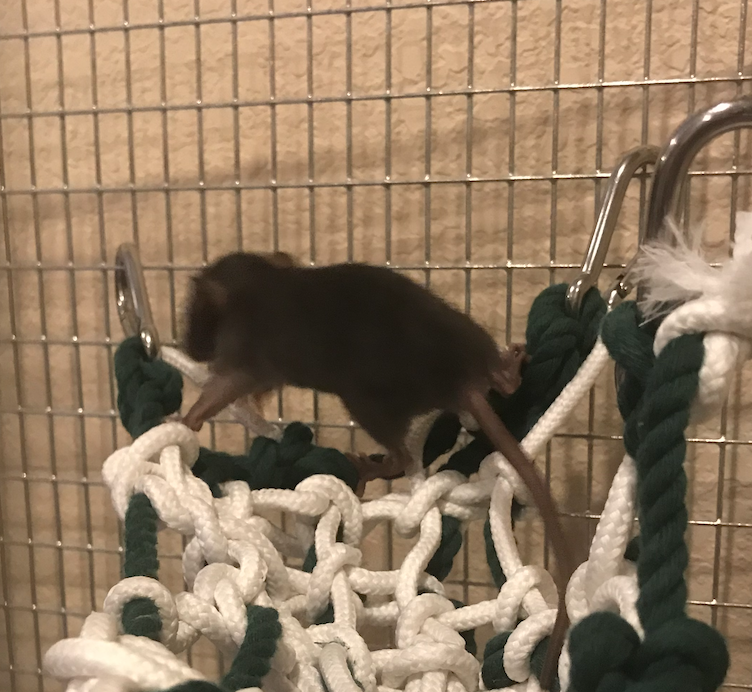

Rats
The Differences between Rats
The first thing people think when they hear 'rat' is The Black Death and filthy pests. But there is a clear difference between rats as there are for felines and canines. The rats that people
see as walking diseases are not entirely wrong, rats do carry parasites that can be brought to human cities and get contaminate. However, there are also domestic rats that are a bit bigger than wild rats because they've
become more developed under human care. Domestic kinds of rats were bred for laboratory experimentation and some are bred for pets. They are not the rats that are said to be found in sewer systems or the like.
They're different.

Domestic rats, also known as 'Fancy rats', can have many different colors unlike their wild counterparts.

Image sourced from AutomaticTrap.com
Back to Content List
Rat Care
First few things you need to keep in mind when you adopt a rat into your family is that they have very sensitive respitory systems. That's why it's better
to use cotton instead of bedding to keep dust to a minimum. Never give them hay or pine products as they are allergic. But what's nice is that rats are easily potty trained
and like to keep clean like cats do. Rats are also pretty active and need a pretty good sized cage to climb around in. Keep in mind that they can easily squeeze through gaps
so get a wired cage that has gaps smaller than their nose. If their head fits then they can get out!

Here is what my cage looks like.
Back to Content List
My Rats

These are my three rats, they're about fully grown in this photo. They are now a little over 1 year old and are certified emotional support animals.
Here are a couple baby pictures of how small my rats were when I first got them.
Here we have Kiki.

And here is her sister, Mona.
Then last, but not least, we have Peach who looks very similar to Mona
but she doesn't have white paws or belly.
Back to Content List